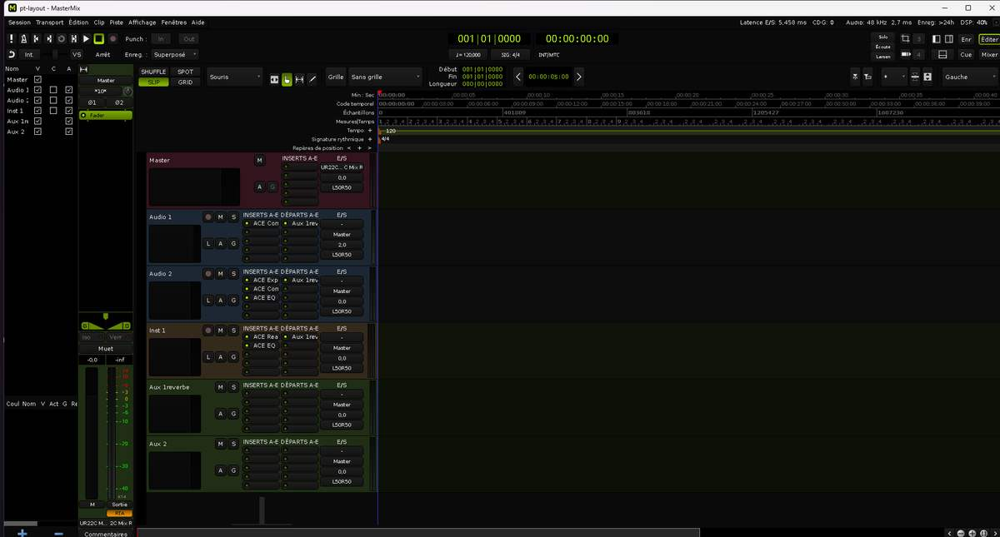
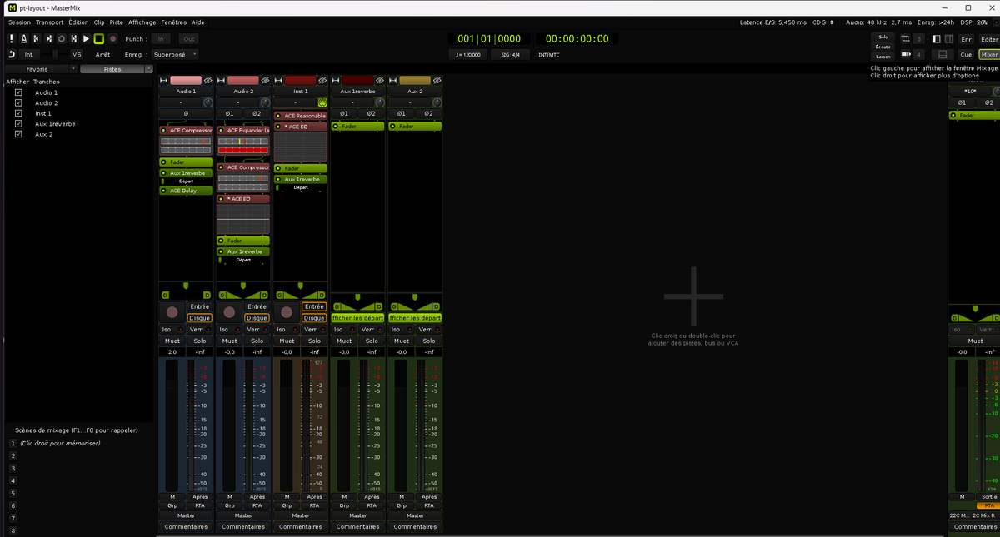

MasterMix
La station de travail audio professionnelle, facile, pour mixer et masteriser.

Fenêtre d'édition : chaque piste affiche ses inserts, ses départs et ses entrées-sorties.
de latence aller-retour mesurée en ASIO, buffer de 128 échantillons
Mastersuite inclus : effets de mixage et de mastering, accordeur, piano et basse
à vie offertes aux premiers utilisateurs, 10 € ensuite
Facile à prendre en main, sérieuse jusqu'au master.
Tout ce qu'il faut pour enregistrer, mixer et masteriser, dans une seule fenêtre lisible, en français.
Facile
Une disposition inspirée des grandes consoles : inserts, départs et entrées-sorties directement dans l'en-tête de chaque piste. Modes SHUFFLE, SPOT, SLIP et GRID, horloges Début / Fin / Longueur. Interface entièrement en français.
Mixer
Une tranche par piste, bus et retours, gel des pistes en un raccourci. Vos instruments et effets VST3, VST2 et CLAP, repérés automatiquement et hébergés dans un processus séparé. Pilotes ASIO pour une latence minimale.
Masteriser
Les dix plugins Mastersuite sont inclus : égaliseur MasterQ, compresseur MasterComp 76, limiteur true-peak MasterL, restauration MasterClean, assistant de mastering MasterFlem, réverbe MasteRev, délai MasterDelay, accordeur MasterTune, et deux instruments : piano MasterKeys et basse MasterBass.

Une tranche par piste, tout sous les yeux.
Inserts, départs, panoramique, fader et vumètre alignés sur chaque tranche. Les instruments multi-sorties tiennent sur une seule tranche, ou une par sortie si vous le demandez. Le master reste à droite, toujours visible.
Dix plugins inclus, du premier accord au master.
Tous en VST3, habillage MasterMix, installés avec la station. Ils fonctionnent aussi dans tout autre hôte VST3 64 bits.
MasterQÉgaliseur
Égaliseur paramétrique 16 bandes : courbe interactive à la souris, analyseur de spectre en temps réel, cloches, plateaux, coupe-bas et coupe-haut. Pour sculpter une piste ou corriger un master.
MasterComp 76Compresseur
Compresseur FET inspiré du 1176, une seule rangée de commandes : entrée, sortie, attaque, relâchement, ratios 4 / 8 / 12 / 20 et mode « tous enfoncés ». Circuit transistor ou lampe. Voix, batterie, basse.
MasterLLimiteur
Limiteur true-peak pour le master : plafond, gain d'entrée, relâchement, mesure de loudness (LUFS) et de crête vraie intégrée. Ce qui sort ne dépasse jamais le plafond, quelle que soit la plateforme.
MasterCleanRestauration
Restauration audio : réduction de bruit large bande, suppression de ronflette 50 / 60 Hz et de ses harmoniques. Pour rattraper une prise bruyante ou un enregistrement ancien.
MasterFlemAssistant de mastering
Assistant de mastering : analyse le mix, vise une cible (streaming, club, radio) et règle sa chaîne égaliseur, compresseur et limiteur pour l'atteindre. Comparaison A/B, réglages modifiables à la main.
MasteRevRéverbe
Réverbe algorithmique à réseau de huit lignes : taille, pré-délai, amortissement, largeur, mix. Douze préconfigurations voix et instruments qui sonnent juste dès le choix, en insert ou sur un bus.
MasterDelayDélai
Délai stéréo synchronisé au tempo ou libre, ping-pong, retour filtré et saturé en douceur, modulation type bande. Douze préconfigurations : slapback, doublage, écho pointé, dub.
MasterTuneAccordeur
Accordeur chromatique à poser sur la piste : note, écart en cents sur une aiguille, fréquence mesurée, La de référence réglable, notation C D E ou Do Ré Mi, sortie muette pendant l'accordage. Précis au cent.
MasterKeysPiano
Piano à échantillons : le Salamander Grand Piano (Yamaha C5, 16 couches de vélocité, Alexander Holm, CC-BY 3.0) inclus dans l'installeur. Grille d'accords : tonalité, « 4 accords » par style, suggestions, accompagnement calé sur la lecture et glissé en MIDI.
MasterBassBasse
Basse à échantillons : les deux basses cinq cordes Black And Blue (Karoryfer Samples, CC0) incluses dans l'installeur, huit articulations par keyswitches (doigt, médiator, étouffé, slap, pop, harmonique, ghost, glissé), manche, legato et portamento, accompagnement qui suit la grille d'accords. Vos WAV ou SFZ en priorité.
Télécharger MasterMix 2.19
Installeur pour Windows 10 et 11, 64 bits, avec les dix plugins VST3 Mastersuite et, au choix, les banques de sons embarquées : le piano Salamander pour MasterKeys et les basses Black And Blue pour MasterBass. Aucun téléchargement pendant l'installation. Licence à vie offerte aux 100 premiers utilisateurs, 10 € ensuite. Sans compte ni abonnement ; MasterMix vous propose lui-même les mises à jour suivantes.
MasterMix-2.19-Setup-x64.exe · 1225 MoConfiguration requise
Un PC récent suffit. Une interface audio avec pilote ASIO donne le meilleur résultat.